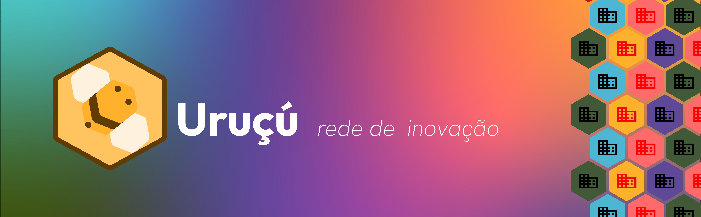
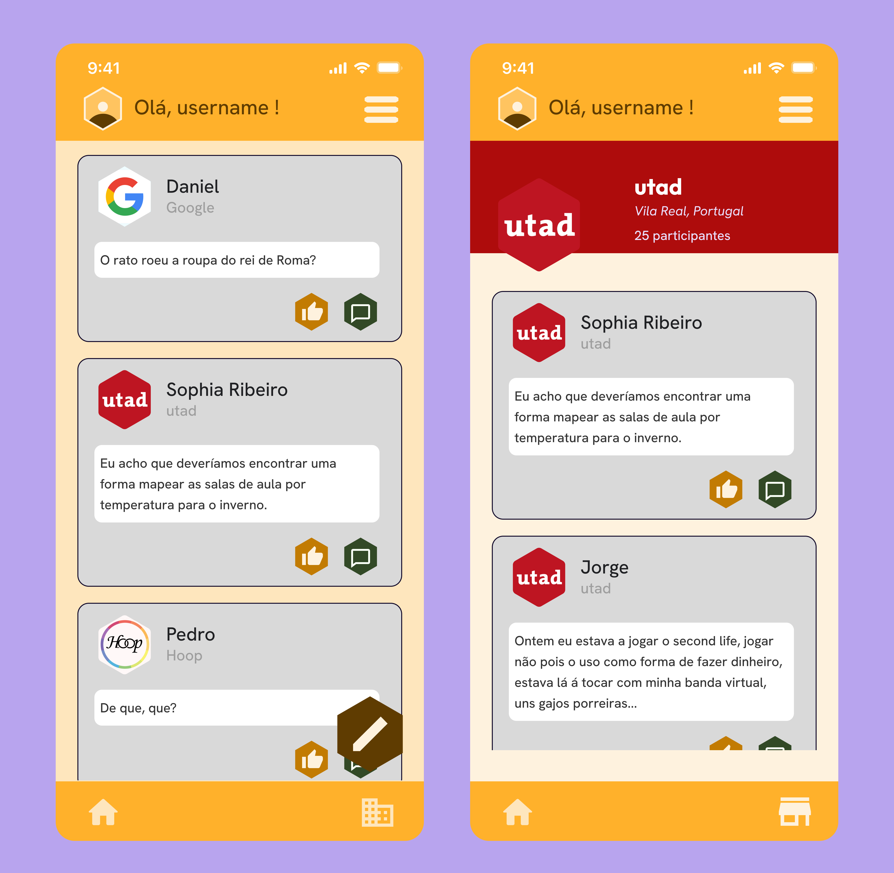
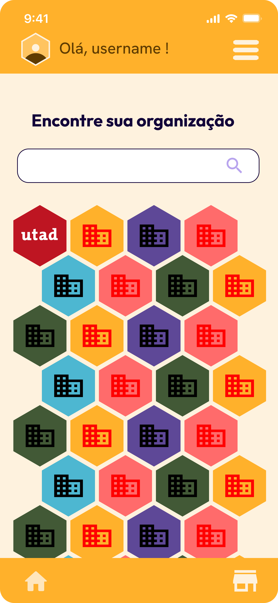
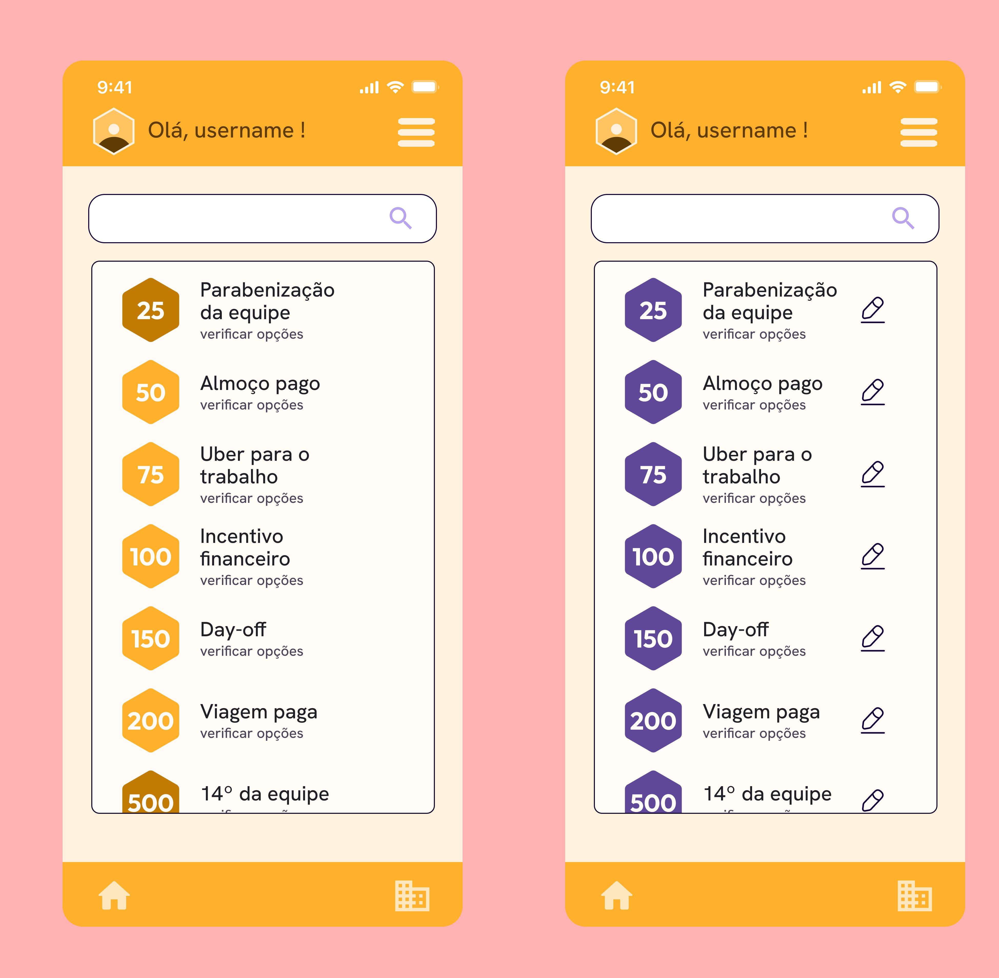
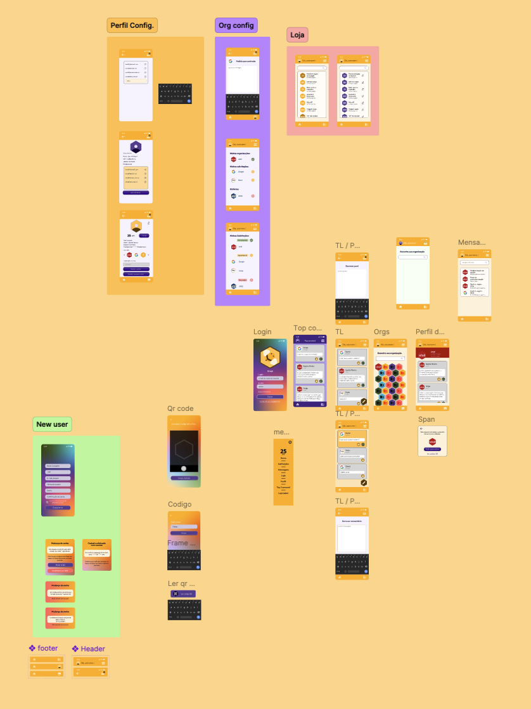
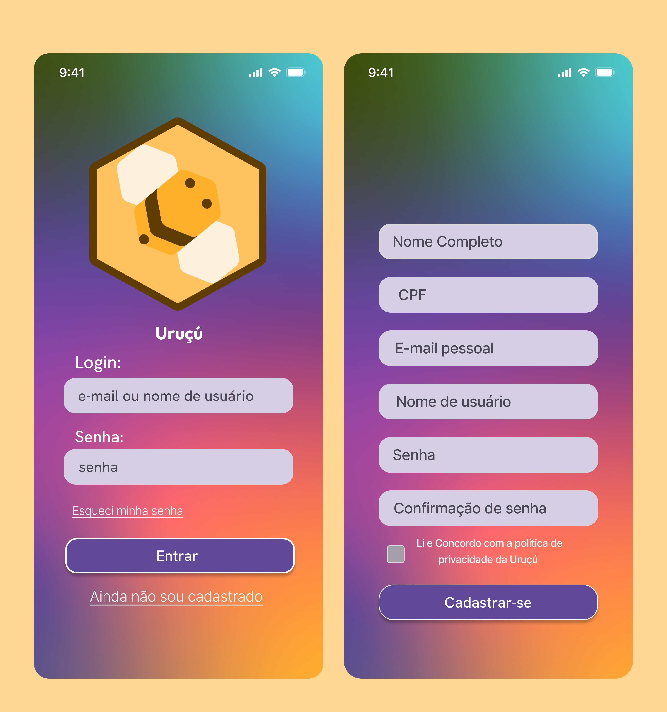

Rede social interna para fomentar inovação colaborativa entre colaboradores de uma empresa. O nome Uruçú constrói identidade e pertença — do discovery ao sistema visual, com foco em engajamento e cultura de inovação organizacional.
"Do campo à mesa — uma experiência que traduz o artesanal em digital sem perder autenticidade."

A Uruçú é uma rede social interna desenhada para fomentar a inovação colaborativa dentro de uma organização. O conceito parte da ideia de que boas soluções surgem de qualquer nível da empresa — e que falta um espaço seguro, acessível e motivador para isso acontecer. A plataforma permite que colaboradores proponham ideias, colaborem em desafios lançados pela empresa e reconheçam contribuições dos colegas.
O nome Uruçú não descreve o produto — constrói uma história. A abelha Uruçu é nativa do Brasil, trabalha em colectivo e produz sem aguilhão: um símbolo de colaboração, cuidado e inovação orgânica. A identidade visual parte daí para criar pertença e diferenciação interna, distanciando-se da frieza de ferramentas corporativas típicas.


O sistema visual deliberadamente evita a linguagem visual corporativa — sem cinzentos, sem tabelas densas, sem sensação de intranet. A paleta é calorosa e viva, os componentes têm arredondamentos generosos e a tipografia é acessível. O objectivo é que a app pareça um espaço de colaboração, não uma ferramenta de reporte.
Os componentes foram desenhados em Figma com auto-layout e variantes completas. O sistema de gamificação — pontos, badges e reconhecimento entre pares — foi desenhado para encorajar participação contínua sem criar pressão de performance. A iconografia usa referências subtis à abelha e ao colectivo.



— Uruçú · Rede Social Interna · Inovação Colaborativa · Mobile App